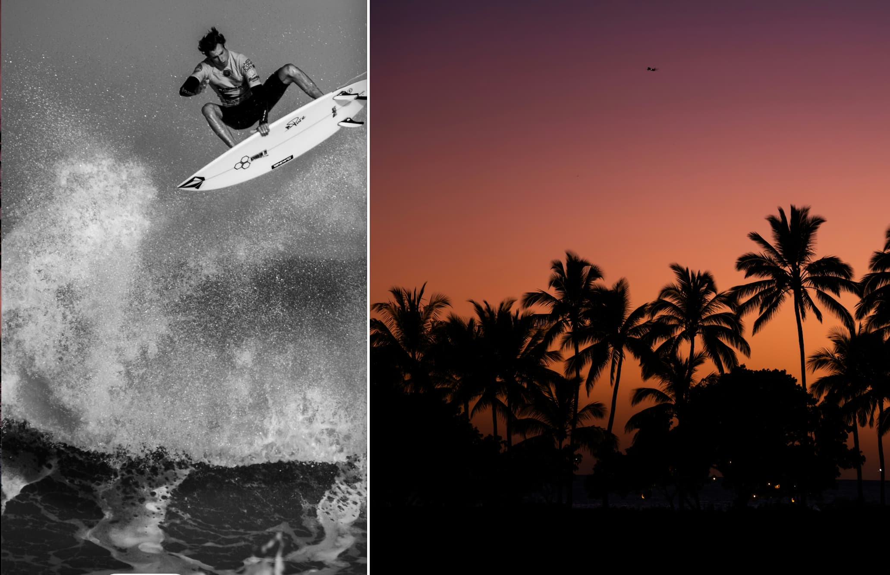
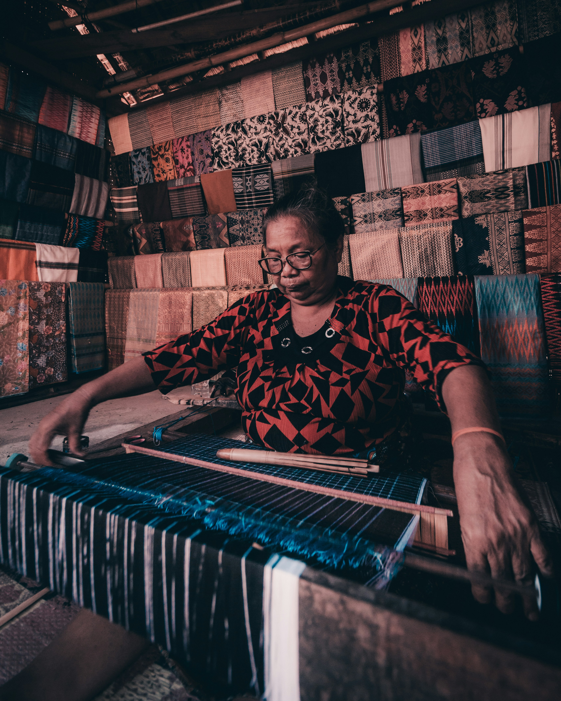
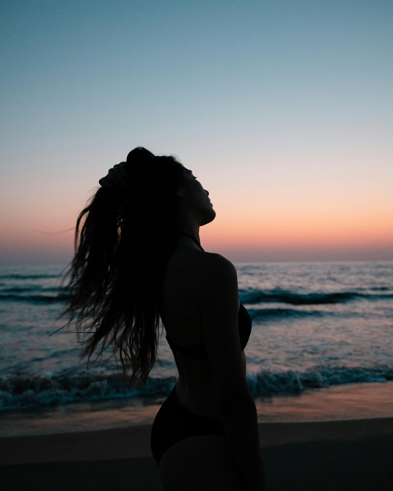
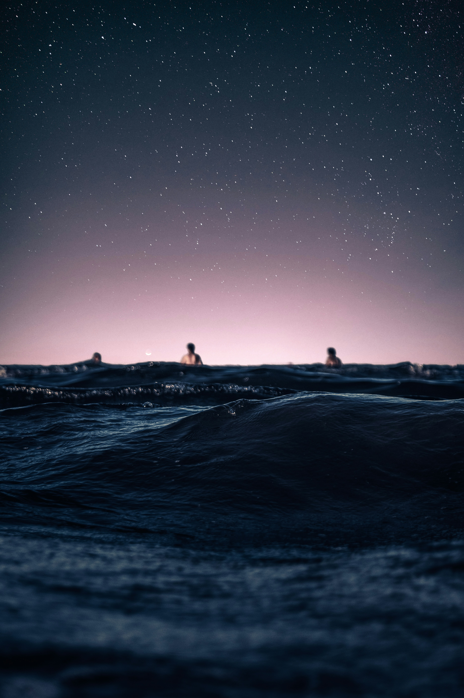
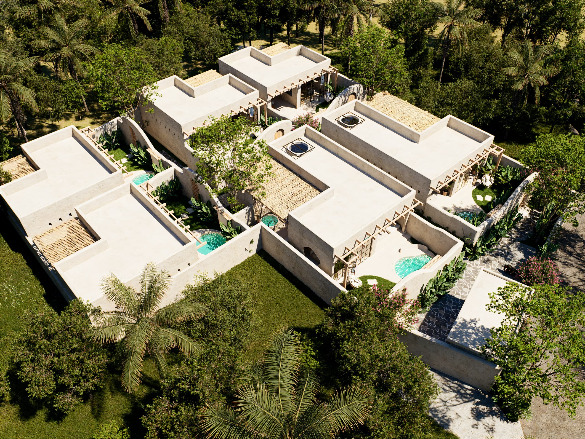
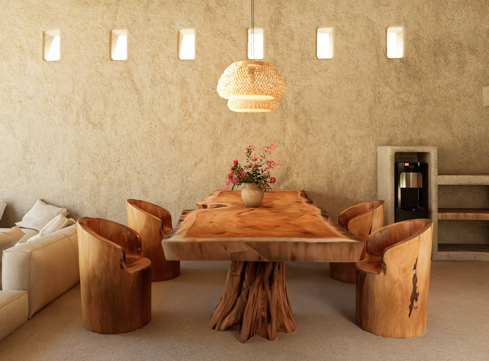

Experiences | Casa Brava Boutique Hotel
El mismo ritmo, instante a instante
Agua, arena, sobremesa, silencio: los mismos gestos que definen un día en Casa Brava, vistos en fragmentos.


Su nombre viene de subhanallah: un motivo de hexágonos como panal, tejido solo por mujeres mayores en un estado casi meditativo. Dicen que es la tela la que elige a su dueño, no al revés.

Ragi, requisito; genep, completo: el motivo que marca cuándo alguien está listo para un viaje. Se teje en pareja con Bintang Empat como regalo de compromiso. Dos telas que solo se separan el día de la boda.

La isla entera que hay que salir a recorrer: playas, mercados, la costa de Kuta Mandalika. Es el único de los cinco motivos que mira hacia fuera de la villa.

Las cuatro estrellas que marcan el calendario agrícola sasak avisan de cuándo cambia la estación. Simbología asociada a la orientación y la esperanza.

Las sombras cuentan una historia. En el tenun, este teatro de sombras representa la lucha entre el bien y el mal. Equilibrio entre las fuerzas de la naturaleza y el ser humano.

En tu villa de Casa Brava
Cada piscina nace como una extensión natural de su villa: un espacio privado, protegido y en calma. La arquitectura abraza el paisaje haciendo que piscina, jardín y villa se fundan en un solo refugio. Aquí el lujo no necesita hacerse notar; se descubre en el silencio, en la intimidad y en la sensación de que todo este lugar existe solo para vosotros.


Todo aquí sucede un poco más despacio
La luz cambia, la conversación continúa y alguien vuelve a servir una bebida. No hay prisa, ni horarios que interrumpan el momento. Solo el placer de quedarse un rato más.
El Kuta que solo enseñamos a los nuestros
Todo esto se hace saliendo de Casa Brava, en Kuta. Nada de excursiones a dos horas de la villa, nada elegido al azar. Es lo que le diríamos a un amigo, con el mismo cuidado con el que pensamos cada villa.
Costa & Territorio
-
PlayaAprox. 15 min desde Casa Brava
Kuta Mandalika
La bahía que da nombre a esta costa. La preferimos a última hora, cuando el mirador de piedra se llena de sombras largas.
Leer más -
PlayaAprox. 20 min
Mawun
La misma agua de Kuta, con menos gente y una curva de colinas que la envuelve entera.
-
PlayaAprox. 20 min
Tanjung Aan
Dos bahías cosidas por arena de azúcar. De las pocas orillas donde el mar no exige nada, solo flotar.
Leer más -
Playa · Marea bajaAprox. 20 min desde Casa Brava
Batu Payung
La roca que da nombre a la playa se levanta sola sobre el agua. Solo se cruza a pie cuando baja la marea.
Leer más -
Mirador · AtardecerAprox. 15-20 min desde Casa Brava
Bukit Merese
El mejor atardecer de la zona: una subida corta a pie hasta una cresta con vistas a toda la bahía.
Leer más -
Cascada · Día completoAprox. 1,5-2 h desde Casa Brava
Cascadas de Benang Kelambu
Las cascadas reales más cercanas siguen quedando lejos. Merece la pena, pero solo con el día libre de verdad.
Leer más -
IslasSalida desde el puerto de Tawun, aprox. 45 min-1 h desde Casa Brava
Las Gili secretas
Nanggu, Sudak y Kedis, tres islas diminutas en el suroeste. Están mucho más cerca que las Gili famosas del norte.
-
Islas · Día largoAprox. 2-2,5 h hasta el embarque, en el norte
Trawangan, Meno y Air
Las Gili que todo el mundo conoce, con razón: agua turquesa y el ritmo sin motos ya famoso. Embarque en el norte.
Surf & Snorkel
-
Surf · Todos los nivelesAprox. 5-10 min desde Casa Brava
Seger y Gerupuk
Las olas más cercanas y más amables de la zona. Aquí es donde se aprende bien a surfear.
-
Surf · PrincipiantesAprox. 35-40 min desde Casa Brava
Selong Belanak
La playa donde recomendamos la primera clase de verdad: rompiente suave, arena en vez de roca, fondo que perdona los primeros wipeouts.
-
Surf · AvanzadoAprox. 20-30 min desde Casa Brava
Mawi
Una de las olas más serias del sur, con corrientes fuertes cuando entra swell grande. Solo si ya surfeáis con soltura.
-
Snorkel · Islas secretasSalida desde el puerto de Tawun
Las islas que nadie más visita
Barco privado hacia tres islas diminutas —Nanggu, Sudak y Kedis— con arrecife propio.
Vía GetYourGuide Reservar -
Surf · PrincipiantesA pocos minutos de Casa Brava
Tu primera ola, sin prisa
La ola más generosa del sur: arena en vez de roca, rompiente lenta, un instructor que corrige la postura desde el primer error.
Vía GetYourGuide Reservar
Mesa & Café
-
RestauranteAprox. 5 min desde Casa Brava
SeaSalt
El único bistró justo en la playa de Kuta: pescado del día, poco pretencioso, buena mesa después de surfear.
Instagram oficial Descubrir el restaurante -
Restaurante · PostresAprox. 10 min desde Casa Brava
Le Too Much
Cocina francesa y mediterránea en una cabaña de bambú con aire europeo, para cuando el antojo es de tarta de chocolate.
Web oficial Ver carta -
CaféAprox. 10 min desde Casa Brava
Milk Espresso
Café de verdad, servido por gente que sabe de café. De día es la mesa de trabajo de medio Kuta; de noche, la terraza sube a la azotea.
Instagram oficial Descubrir el café -
Beach ClubAprox. 10-15 min desde Casa Brava
Mandalika Beach Club
Piscina infinita a pie de playa, con tumbonas de sobra para quedarse toda la tarde. Sin entrada.
Instagram oficial Descubrir el beach club -
Café · DesayunoAprox. 10 min desde Casa Brava
Guru
Jardín abierto entre palmeras y sofás bajos, con café de especialidad y desayunos sin prisa. El que recomendamos siempre.
Instagram oficial Descubrir el café
Bienestar
-
YogaAprox. 10 min desde Casa Brava
Shanti Yoga Lombok
Clases abiertas para todos los niveles entre jardines tropicales, dentro de la propia Kuta Mandalika.
-
Spa · Contraste frío-calorAprox. 10 min desde Casa Brava
Rascals Wellness Room
Sauna, dos baños de hielo y una piscina de magnesio en un boutique adults-only.
Leer más -
Spa · A domicilioAprox. 10 min desde Casa Brava (o a domicilio)
Dayang Spa
Masaje tradicional balinés, manos que saben dónde ha estado la sal y el sol todo el día. También podeis pedir que vengan a la villa.